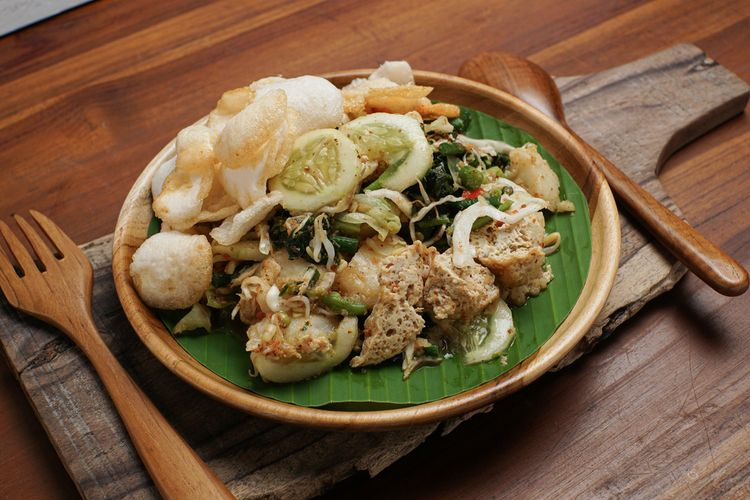

Lotek
Lotek (Aksara Sunda Baku: ᮜᮧᮒᮦᮊ᮪, Loték) adalah salah satu makanan khas Sunda yang mudah ditemukan di seluruh wilayah Jawa Barat. Sepintas lotek ini hampir mirip dengan Gado-gado, yakni makanan berupa rebusan sayuran segar yang disiram dressing berupa sambal dicampur bumbu kacang. Keunikannya, sebagai bahan sambal di samping kacang sering kali ditambahkan tempe dan dalam bumbunya ditambahkan terasi, gula merah, dan bawang putih. Secara umum, lotek terasa lebih manis daripada pecel ataupun Gado-gado.
cara Membuat Lotek:
1. Bumbu lotek: Haluskan kacang tanah, cabai rawit, bawang putih, kencur, dan gula merah. Tambahkan air, asam jawa, dan Royco Kaldu Jamur, aduk rata. Sisihkan.
2. Didihkan air, rebus atau blansir semua sayuran secara bergantian. Tiriskan. Sisihkan.
3. Masukkan semua bahan sayuran, tahu, dan tempe dalam mangkuk besar. Tuang bumbu lotek, aduk rata.
4. Sendokkan ke dalam piring saji. Tambahkan bawang goreng, kerupuk, dan perasan jeruk limau. Sajikan dengan Bango Kecap Manis.